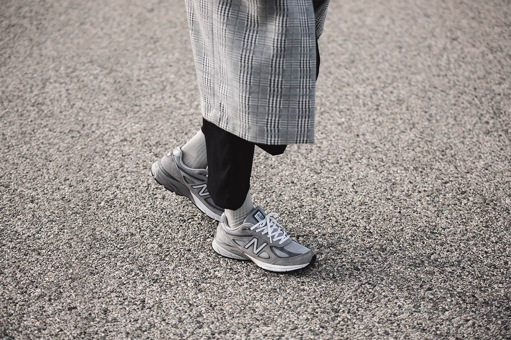

TThe New Balance 990 is a certifiable legend. The inaugural design for the New England brand’s 990 series has achieved something quite rare. Coming full circle, its iconic status as the first in a new class has actually meant it’s become the definitive sneaker of its line, embodying the past, the present, and the future. The 990 is a legend by numbers. When the original was first released in 1982 its original ad noted that: “Out of 1000, this shoe is a 990“. Pithy, succinct word play that summarized the technical prowess in its design—one of the most advanced sneakers of its time.
Its original run was slated for just 5,000 in one of the finest examples of a brand crafting the message, building the expectation around its product, and releasing with a finely balanced run aimed at breaking through the highly competitive sneaker market of the early ’80s. In the end though, demand outstripped initial supply and the first generation release was so strong, it eventually sold 10 times that amount.
"the task was to create the very best running shoe that money could buy."The first 990 applied state of the art technology and materials created purely for runners: a dynamic and responsive three-part EVA midsole combined with a breathable urethane collar a durable leather upper. 
This technology made the 990’s original price point a step above the others. Set at $100, its three-figure asking price was unheard of at the time. While today, sneakers in the hundreds are just part of the game, at that time the 990’s price point carried cultural and social weight: either you were a serious runner who invested in their tools, or your salary was a cut above the rest. This cultural juxtaposition played out in the nickname the 990 earned on the streets—the DMV, standing for Washington D.C., Maryland, and Virginia, after the areas where it became popular among clientele that paid for the sneakers in nothing but cold, hard, untraceable cash. It was, and remains, the epitome of an understated yet verifiably gritty style that walks inner city streets to leafy suburban sidewalks.
Stadium Goods
Available Now
eBay
Available Now
Need Supply
Raffle
Nike SNKRS
Sold Out
KITH
Sold Out
Blends
TBD
Extra Butter
In-store Raffle
XHIBITION
Online Raffle
Sneaker Politics
In-store Raffle/Event
Rooted